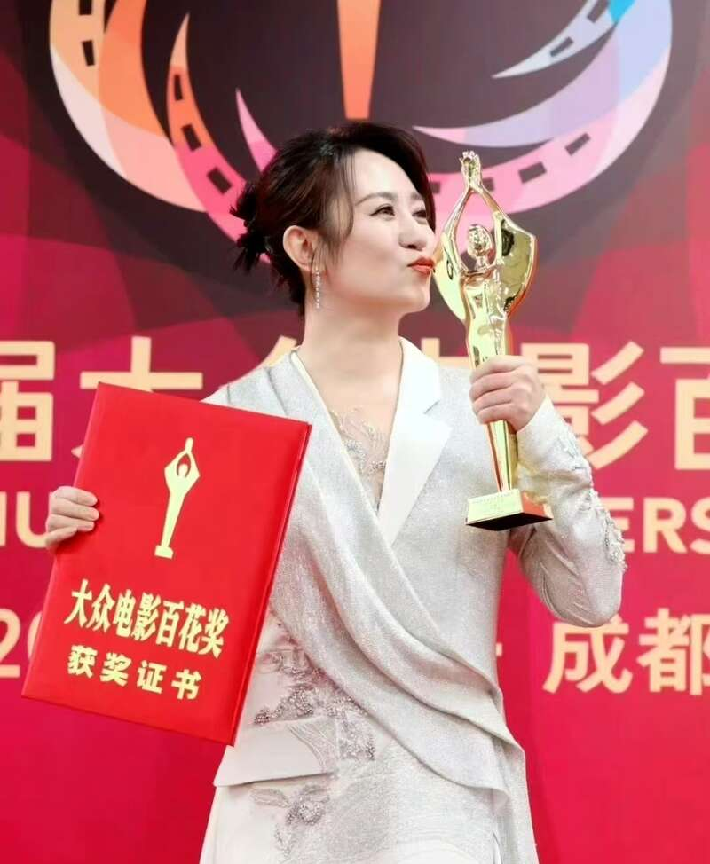

贾玲能凭借《热辣滚烫》获得最佳女主角和最佳导演两个提名奖已经很不错了，最后没有获奖是正常现象。因为，实话实说，贾玲的导演水准和作为电影演员的演技，离成熟导演和演技派演员，还有很长的一段路要走。
贾玲在戏里戏外减肥100斤的真实经历和噱头，让《热辣滚烫》这部影片，成为了春节档的高票房影片。
贾玲活生生的减肥瘦身经历，也确实激励了大批女性。但激励大家的，其实是贾玲本人，而不是她电影中的角色乐莹。
实话实说，虽然我个人很佩服贾玲的毅力和精神，也佩服她毅然转型的勇气和眼光头脑，但有一说一，作为一个电影导演，《热辣滚烫》并不是一部优秀的作品，甚至都算不上是一部合格成熟的作品。
作为女主角的乐莹，在影片中的角色形象也并不十分令人信服，在电影中的转变也十分突兀，其角色形象塑造十分模糊、单薄、拧巴，更像是一个纸片人和工具人。
所以在春节期间，《热辣滚烫》的高口碑和低分评价齐飞，成为春节档电影的一大奇观。
贾玲作为不成熟的电影导演，以及一般的演技，演绎的又是她自己执导的电影中的一个单薄的角色，不获奖，才是意料之中。
贾玲能够同时获得最佳女主角和最佳导演的提名，本身就是对她个人才华和努力的极大认可。这表明她在导演和表演两个领域都已经取得了不错的成绩，得到了业界的关注和赞赏。
能够提名，已经是看在她电影的高票房的亮眼优势上了。
高票房，代表它是一部商业成功的电影，但不能代表它是一部艺术水准高的电影。
有高票房，又因此转型成为了女性励志的榜样，挣到了很多钱，也接到了高奢代言，贾玲已经获得了非常耀眼的成功了。
所以看到有人说意难平，心疼贾玲，其实大可不必。
你一个月入几千的人，去心疼一个票房几十亿的明星导演？
百花奖作为中国电影界的重要奖项，其评选标准涵盖了多个方面，包括影片的艺术质量、演员的表演水平、导演的执导能力等。
百花奖作为国内顶级电影奖项，每年都会有众多优秀的电影人和作品参与角逐。
在最佳女主角和最佳导演的评选中，与贾玲竞争最佳的，可能是更加出色的演员和导演。
而且作为观众，更注重的是个人的观影感受和情感共鸣，而百花奖评委则可能更注重导演和演员的专业技巧，以及影片的艺术价值。
贾玲在百花奖竞争中面对的导演和演员，可都是在这个专业打拼多年的成熟导演和演员，看看最后的获奖名单，最佳导演张艺谋，最佳女主角马丽，面对这样强大的对手，贾玲可能输得一点也不冤，输得心服口服。

而且她已经在另一个赛道大赢特赢了。
甘蔗没有两头甜。